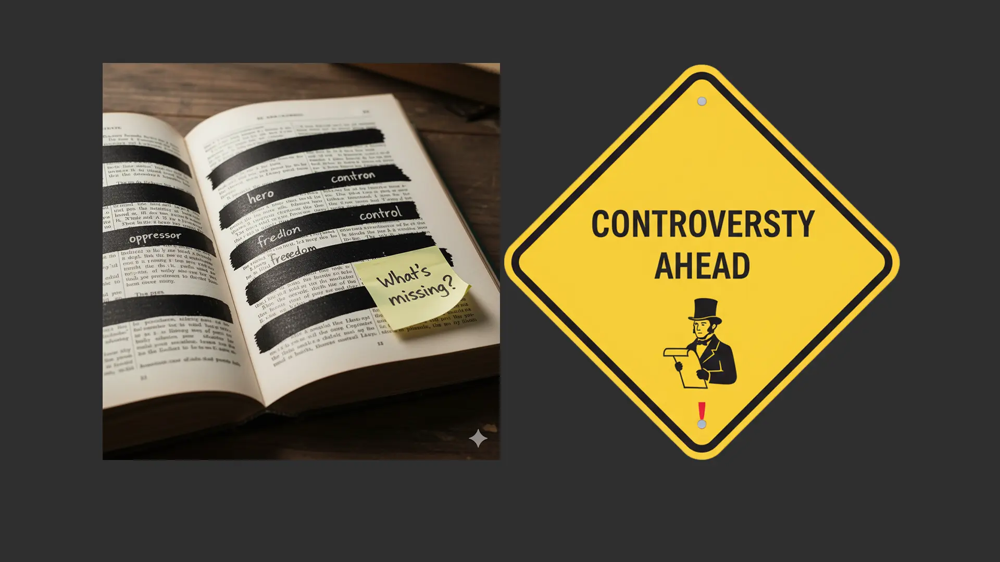
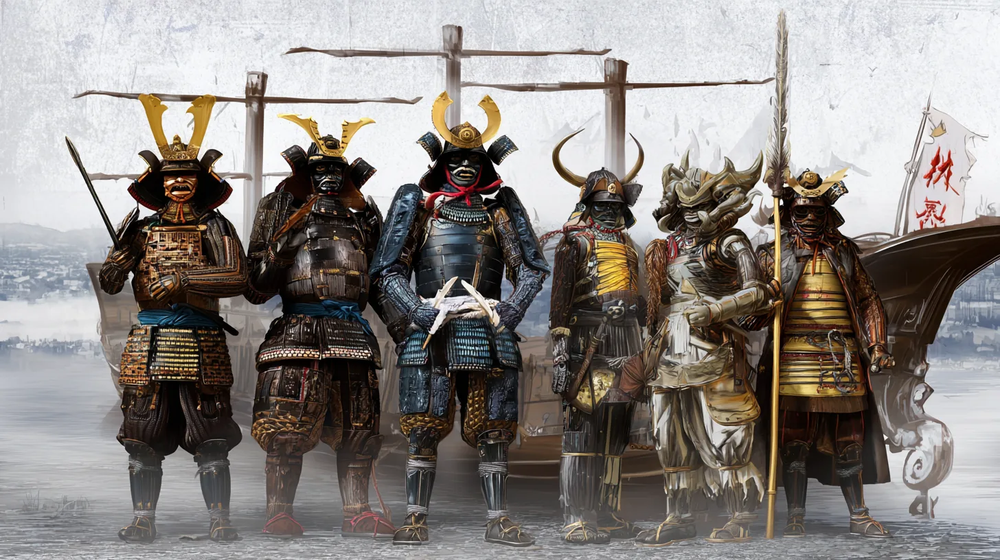
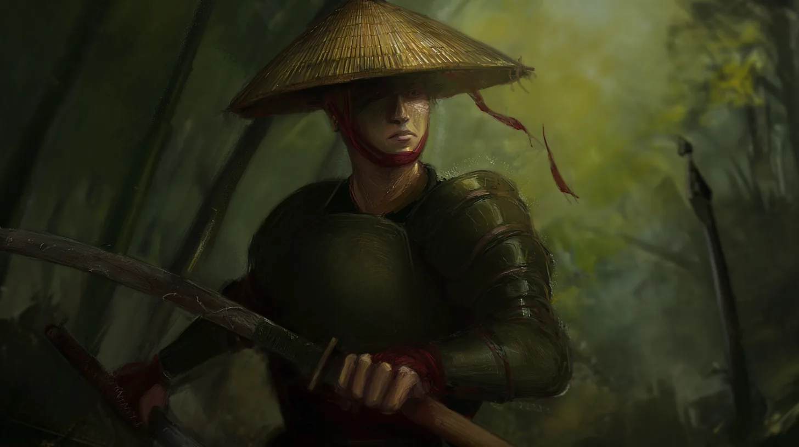
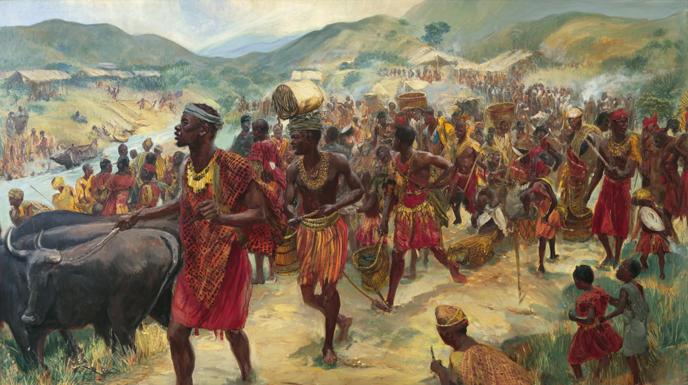
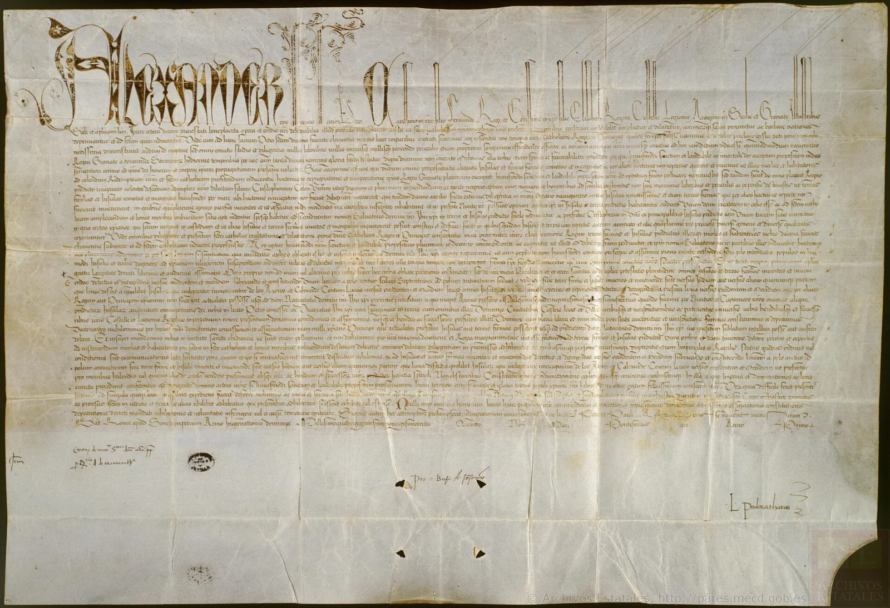
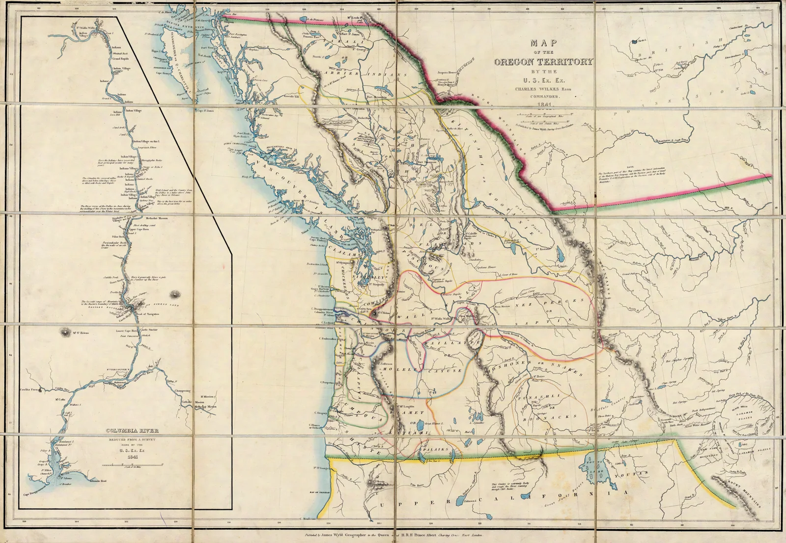
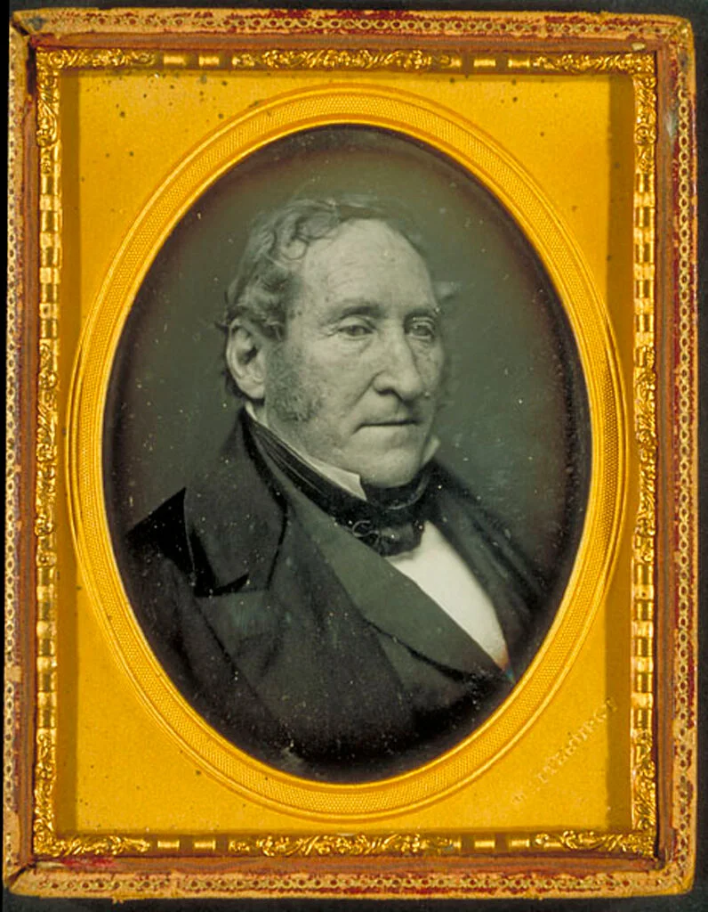
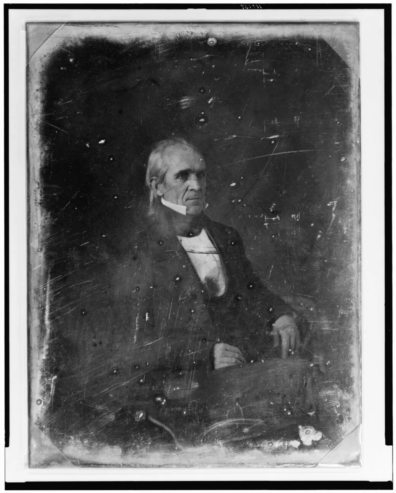
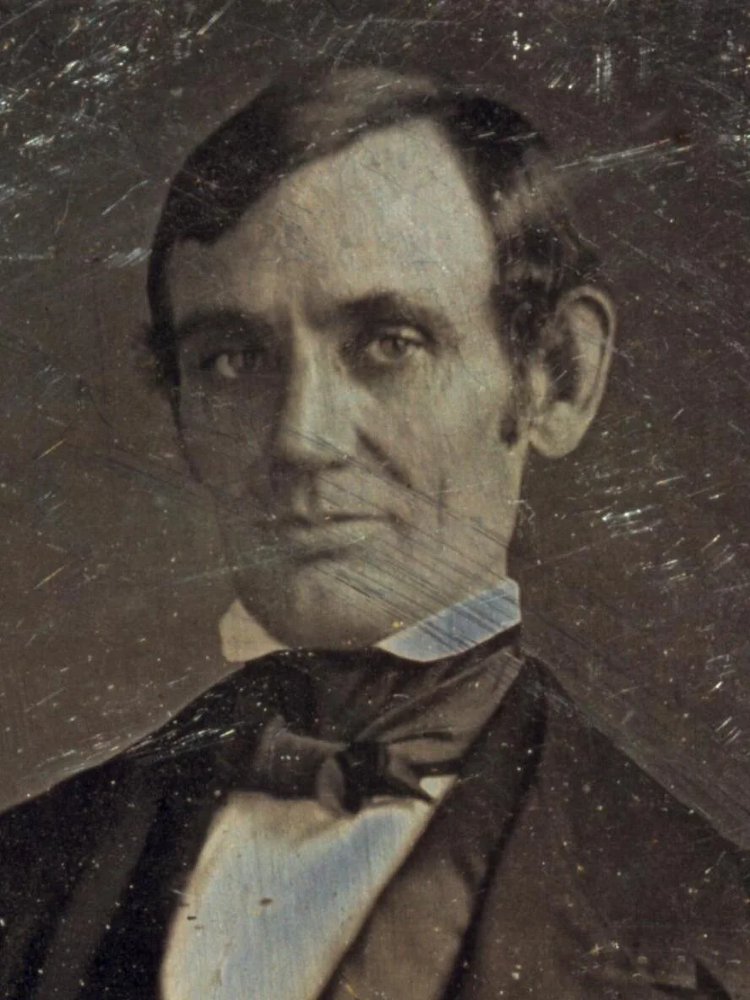

John Gast, American Progress, 1872 (Autry Museum of the American West; public domain, via Wikimedia Commons)
Sea to Shining Sea
U.S. expansion 1783–1850 (just 67 years), one of the fastest in world history
1783: ~890,000 sq mi (Treaty of Paris)
1850: ~3.0 million sq mi
Growth: ~3.4×
Added: ~2.1 million sq mi (~1.34 billion acres)
Pace: ~31,300 sq mi per year
No republic has ever expanded
as fast, as far, and with as much lasting integration
as the U.S. from 1783 to 1850.
Dig Deeper: compare U.S. expansion
Central Thesis
Success in territorial expansion created fatal political division over slavery.
Controversy Ahead

Modern graphic
This lecture deals with conquest, racism, and the loss of homelands.
You will read the words people used at the time, including ugly ones.
The goal is to understand first, then judge with evidence.
Part I: Expansion in World Context
A pattern older than the United States
Global Context: A Universal Pattern
Before examining American expansion, recognize a pattern repeating across continents and millennia:
A technologically or demographically stronger group claims a divine or civilizational mandate to "improve" land already in use by indigenous peoples.
Japanese Displace the Ainu
(~3rd century CE–1912)

Modern AI-generated illustration (not a historical image)
Viet Push Champa and Khmer South
("Southward Advance," Nam Tiến, 10th–19th centuries)

Modern AI-generated illustration (not a historical image)
Bantu Migrations Displaced Khoisan
(Southern Africa, ~300–1800 CE)

Modern AI-generated illustration (not a historical image)
Common Threads Across All Examples
Divine right, racial superiority, or "civilizing mission"
Demographic swamping via mass migration
Legal fictions: treaties, purchases, declarations of emptiness
Violence + disease as force multipliers
Long-term assimilation or erasure of indigenous cultures
Pivot Statement: The United States is not the origin of this process. Its speed, its democratic-republican form, media amplification, industrial scale, and legal sophistication are the only differences.
Thinking Historically: Context vs. Presentism
Critical Framework:
Contextualization is disciplined empathy; presentism is undisciplined certainty.
Understanding historical actors, events, and ideas within their own time period, considering the beliefs, knowledge, values, and constraints they operated under.
"The past is a foreign country; they do things differently there."L. P. Hartley, The Go-Between (1953)
Part II: The Ideas Behind Expansion
Six justifications, and the Whigs who pushed back
Reframing the National Mission
In the decade following 1845, the United States underwent a transformation that redefined the scope of the American Republic.
Three Interlocking Realities:
Demographic pressure: Population doubling about every 25 years
Institutional superiority: Confidence in republican government
Providential duty: Divine mandate for expansion
Justifications for Westward Expansion
How Americans in the 1840s understood their mission
1. Providential Allotment
God gave the continent to the U.S.
2. Demographic Imperative
A growing people needs room
3. Anglo-Saxon Racial Mission
A "race" fit to rule and spread liberty
4. Ethical Exceptionalism
Expansion as a gift to humanity
5. Divided Aims
Democrats and Whigs wanted different things
6. Economic Rationalism
Land as an engine of wealth
Whig Opposition: Moral Restraint in an Age of Conquest
Who Were the Whigs?
Founded 1834: anti-Jackson coalition
Leaders: Henry Clay, Daniel Webster, young Abraham Lincoln
Core belief: strong federal government for national improvement
"American System": bank, tariffs, internal improvements
Social vision: moral progress through institutions, not conquest
Opposition to Aggressive Expansion
Indian Removal Act (1830): Whig founders such as Theodore Frelinghuysen led the fight against it; Clay denounced removal
Mexican-American War (1846–48): Lincoln's "Spot Resolutions" demanded proof the war began on U.S. soil
Feared war would spread slavery, inflate debt, weaken federal legitimacy
Believed in elevation over expulsion: Natives and Mexicans could be "civilized"
"Not all who believed in progress believed in plunder." (a summary of the Whig conscience in a Jacksonian age)
1. Providential Allotment (Divine Destiny)
North American continent providentially allotted to the U.S. for free development of its multiplying millions under Anglo-Saxon republican government.
God's plan specifically designated this land for Anglo-Saxons.
Manifest Destiny
"…our manifest destiny to overspread the continent allotted by Providence for the free development of our yearly multiplying millions."John L. O'Sullivan, "Annexation," United States Magazine and Democratic Review, 1845
Key Innovation: Destiny > Law: moral imperative trumps legal claims.
1. American Exceptionalism
Puritan "City upon a Hill" (1630)
Stable gov't, growth, mobility
Religious freedom, literacy
Polk: "our happy land," "this glorious Union"
2. Republican Mission
Spread self-rule and law
Replace "chaos" with republics
Not conquest: rescue
Mexico's frequent coups → U.S. "order"
3. Divine Guidance
Continent = God's theater
Geography proves design
Opposition = defying Providence
Success = proof
Go deeper: Manifest Destiny was a discourse, a way of talking that made expansion sound natural and inevitable. See how it worked: the reading → · the discourse slides →
Whig Response to "Manifest Destiny"
Whigs did not oppose expansion. They opposed Democratic, uncontrolled, divinely reckless expansion.
1. Moral Hubris
Blasphemous to claim God ordains conquest
Clay's view: no nation has a divine right to trample others
2. Reckless & Costly
War debt, military overreach
Mexican War = "Mr. Polk's War"
3. Sectional Poison
Slave-power plot to add slave states
J. Q. Adams: Texas annexation as a slaveholders' conspiracy
Whig Vision: Controlled Expansion to fund the American System: law, commerce, and federal guidance, not divine land grabs.
2. Demographic Imperative (Population Pressure)
Year
U.S. population
1820
9.6 million
1840
17.1 million (78% increase)
1850
23.2 million (36% increase)
1860
31.4 million (35% increase)
The Problem: A human tide pressing against boundaries
The Solution: Land needed as a demographic safety valve, preventing overcrowding, class conflict, and stagnation
3. Anglo-Saxon Racial Mission
Consensus belief: The Anglo-Saxon race and its institutions were uniquely suited to liberty, law, and progress.
Cultural and racial beliefs in the 19th century justified displacing "inferior systems"
These ideas were wrong and racist. We study them to understand how power justified itself.
4. Ethical Exceptionalism (Moral Superiority)
"Who shall assign limits to the achievements of free minds and free hands under the protection of this glorious Union?"James K. Polk, Inaugural Address, March 4, 1845
Press, pulpit, and schools proclaimed superiority
Expansion viewed as an ethical act benefiting humanity
Spreading superior institutions was seen as a moral duty to mankind
Self-reinforcing: success proved righteousness
5. Manifest Destiny, Divided Aims: Democrats
Democrats championed expansion to dilute federal centralism; Whigs backed it to shore up the American System.
Distant states dilute Eastern elite control and prevent "consolidation"
More land → more yeoman farmers → stronger state sovereignty
Expansion as constitutional safeguard against federal overreach
Key Actions: Jackson's Indian removal; Polk's "54°40′ or Fight!", Texas annexation, Mexican War.
"To enlarge its limits is to extend the dominions of peace over additional territories and increasing millions."James K. Polk, Inaugural Address, March 4, 1845
5. Manifest Destiny, Divided Aims: Whigs
Expansion must fund and protect the American System (bank, tariffs, infrastructure)
New states = new markets and revenue for national economic unity
Cautious pace to avoid debt, sectionalism, and slave-power imbalance
Strong federal institutions needed to bind the nation together
Key Fears: Overextension weakens the national economy; Southern gains upset the Missouri Compromise balance.
"I consider the annexation of Texas, at this time, without the assent of Mexico, as a measure compromising the national character, involving us certainly in war with Mexico … dangerous to the integrity of the Union."Henry Clay, "Raleigh Letter," April 17, 1844
6. Economic Rationalism (Land as Wealth Engine)
Core Argument: Land equals opportunity and wealth
Land needed for yeoman farmers, entrepreneurs, speculators
Mexican Cession = "richest territory on earth" (gold, farmland, ports)
$15M for 525,000 square miles
Part III: Law and "Science"
The Doctrine of Discovery and stadial theory
Legal Framework: Doctrine of Discovery
Definition: An international legal principle originating in 15th-century papal bulls and European traditions that automatically gave Europeans property rights and governmental, political, and commercial rights over indigenous inhabitants without their consent.
Basis: Religious and ethnocentric ideas of European and Christian superiority
American Continuity: Manifest Destiny was the natural outgrowth of this doctrine
Current Status: Still cited in U.S. federal law today

Pope Alexander VI, bull Inter caetera, May 4, 1493 (public domain, via Wikimedia Commons)
10 Elements of the Doctrine of Discovery
1. First Discovery
First European to "see" land gains claim.
2. Actual Occupancy
Must settle or fortify within reasonable time.
3. Preemption
Government monopoly on Native land sales.
4. Indian Title
Natives keep use, but not full ownership.
5. Limited Sovereignty
Tribes = "domestic dependent nations."
6. Contiguity
River mouth = claim to entire watershed.
7. Christianity
Non-Christians = lesser land rights.
8. Terra Nullius
"Empty" if not farmed European-style.
9. Civilization
Duty to "civilize" = justify control.
10. Conquest
Military victory = full legal title.
Click any term for its full definition and a historical example. Framework: Robert J. Miller, Native America, Discovered and Conquered (2006)
Early U.S. Application: The Oregon Strategy
Thomas Jefferson's Strategic Use of the Doctrine:
Dispatched the Lewis & Clark Expedition (1803–1806) as a legal maneuver
Built on Robert Gray's 1792 Columbia River discovery
Post-War of 1812 rituals at Astoria reinforced occupancy
Jefferson understood that physical possession converted incomplete discovery into complete title under the Doctrine's principles.

"Map of the Oregon Territory by the U.S. Ex. Ex.," Charles Wilkes, 1841 (published 1844; public domain, via Wikimedia Commons)
Stadial Theory: The "Science" of Progress
4 Stages of Society
1. Savagery: Hunting and gathering (nomadic existence, no fixed property)
3. Agriculture: Settled farming (fixed land tenure, villages)
4. Civilization: Commerce (trade and manufacturing, written law, republican institutions)
Americans believed:
By 1848, Americans looked at their track record and saw overwhelming evidence of Stage 4 achievement.
Higher stages naturally replace lower ones
Not conquest: progress
Like water flows downhill
This idea was in textbooks, newspapers, and sermons. It wasn't fringe; it was common sense.
The stage labels are 18th- and 19th-century terms, shown so you can recognize them in sources.
Stadial Theory: How Americans Ranked Themselves and Others
"Stage 4": the U.S. view of itself
Written Constitution (1787), working 60+ years
Regular elections, peaceful transfers of power
Courts, contracts, banks, deeds and surveys
Factories, mills, early railroads
"Stage 1": how Americans labeled Plains nations
Buffalo hunting seen as "nomadic"
Councils seen as "no written law"
Unplowed land called "wasted"
"Stage 3": how Americans labeled Mexican California
Ranchos and haciendas seen as "feudal"
Frequent coups seen as weak institutions
~10,000 Californios on land "fit for millions"
The theory claimed to measure "institutional capacity," not race. In practice, the stages tracked power and served American self-interest.
Stadial Theory in Action: Replacement vs. Elevation
Democrats: Progress through Replacement
Stage 4 must replace Stage 1
Hunters represent "waste"
War and removal constitute natural law
"Civilization, or extinction, has been the fate of all people who have found themselves in the track of the advancing Whites."Sen. Thomas Hart Benton (D-Missouri), May 28, 1846
Whigs: Progress through Elevation
Stage 1 can advance to Stage 4
Hunters possess "potential"
Education and treaties fulfill a moral duty
"Do the obligations of justice change with the color of the skin?"Sen. Theodore Frelinghuysen (N.J.), against Indian removal, April 1830
Both accepted stadial theory but disagreed on how to apply it.
How Stadial Theory Made Land "Empty"
The Logic Chain
Societies progress through four stages based on how they get food
Only Stages 3–4 (farming and commerce) create legitimate property
Hunting does not "improve" or "cultivate" land
So hunting lands are legally "vacant" (terra nullius) and open to farmers
American Application
Great Plains
Lakota, Cheyenne, and Arapaho buffalo country declared "waste"
California
Mexican ranchos judged "inefficient"; transfer to Anglo farmers called better land use
When theory perfectly aligns with self-interest, skepticism is warranted.
Part IV: Polk's War
James K. Polk, the Mexican-American War, and the Whig warning
Polk's War at a Glance, 1846–1848
Polk set four goals and met all four
Texas, Oregon, California & the Southwest, a lower tariff
Polk sent troops into disputed land
The Nueces–Rio Grande strip; a skirmish, April 25, 1846
U.S. armies won and took Mexico's capital
About 13,000 U.S. dead, most from disease
Mexico gave up the Mexican Cession
Treaty of Guadalupe Hidalgo, 1848: 525,000 sq mi
Whigs called the war unconstitutional
Lincoln's Spot Resolutions (Dec. 1847)
The new land reopened slavery
Wilmot Proviso (1846) → Free Soil → Republicans
About 1.2 million sq mi added under Polk, and a slavery question that would tear the Union apart.
Treaties: Legitimate Transfers or Coerced Surrenders?
The Legal-Framework View
Agreements between sovereign nations
Compensation, not just seizure
Same principles as European diplomacy
Violations = broken contracts (hence the Indian Claims Commission, 1946)
The Critical View
Signed under extreme duress: starvation or war
Often negotiated with unrepresentative factions
No other buyer (preemption) and no way to enforce terms
Pennies per acre; treaty-making ended in 1871
Do legal forms guarantee justice?
Explicit Contemporary Statements
"The gradual extension of our Settlements will as certainly cause the Savage as the Wolf to retire; both being beasts of prey tho' they differ in shape."George Washington to James Duane, September 7, 1783
"The Red race has disappeared from the Atlantic coast: the tribes that resisted civilization met extinction. This is a cause of lamentation with many. For my part, I cannot murmur at what seems to be the effect of divine law… Moral and intellectual superiority will do the rest: the White race will take the ascendant."Sen. Thomas Hart Benton, Congressional Globe, 29:1 (May 28, 1846), 917–918
Critical Reality: Leaders anticipated and accepted that expansion would be a disaster for the legal, cultural, economic, and political rights of Indian nations and Native peoples.

Thomas Hart Benton, daguerreotype, c. 1850 (public domain, via Wikimedia Commons)
The Human Cost of Manifest Destiny
Americans
~13,000 U.S. troops dead (mostly disease)
Financial cost: about $100 million
Political fracture → Civil War
About 620,000–750,000 dead in 1861–65
Mexicans
~25,000 dead (military + civilians, estimated)
Lost about 55% of territory, counting Texas
~80,000–100,000 in ceded lands came under U.S. rule; many later lost land
Cultural and political marginalization
Indigenous Nations
100M+ acres taken (1830–50)
60,000+ forcibly removed
Estimated 10,000–15,000+ died in removals (e.g., Trail of Tears)
Ethnic cleansing, cultural destruction
Ultimate Consequence: Civil War, the price of a continent built on displacement and division.
U.S. Territorial Acquisitions, 1783–1853 (click to enlarge)
1853
Continental federation
Secure
Coast-to-coast
31 states
Tools of Transformation: Treaties • Plows • Ballots • and Guns!
Today's lecture ends here. Next: the Pierian Spring, required independent study on Polk's war.
Beyond the lecture
Pierian Spring
Required Independent Study
Today's lecture ends here. Continue on your own: the stories below tell the full history of Polk's war, from his four goals to the Treaty of Guadalupe Hidalgo, and a short Check Yourself quiz at the end tests what you learned.
"A little learning is a dang'rous thing; Drink deep, or taste not the Pierian spring."Alexander Pope, An Essay on Criticism (1711)
About 1.2 million sq mi added, more than under any other president (the Louisiana Purchase was ~828,000)
Whig Critique:
The war was "unnecessarily and unconstitutionally begun by the President of the United States."
House of Representatives amendment, Jan. 3, 1848 (Lincoln voted yes)

Agent of Destiny, or Architect of War? James K. Polk, daguerreotype, 1849 (public domain)
Pierian Spring · Polk's War, 1844–1848
How Polk Got His Four Goals
1844 Campaign
Beat Whig Henry Clay on a platform calling for the "reoccupation of Oregon"; "Fifty-four forty or fight!" caught on in 1845–46
Oregon
Claimed all of Oregon, then compromised at the 49th parallel (1846) to avoid war with Britain
Texas
Joint resolution of Congress (simple majority, Feb. 1845) instead of a two-thirds treaty vote
California & Southwest
Offer to buy rejected → troops sent to disputed border → war → treaty
Economy
Walker Tariff and Independent Treasury (1846)
Pierian Spring · Polk's War, 1844–1848
Mexican-American War: Polk's War of Choice
Context: Polk's Provocation
Texas border dispute (Nueces vs. Rio Grande)
Polk sent troops into the disputed zone
April 25, 1846: skirmish; May 11: "American blood upon the American soil"
Congress declared war in 48 hours
Democrat Justification
"Mexico has passed the boundary of the United States, has invaded our territory and shed American blood upon the American soil."James K. Polk, War Message, May 11, 1846
Caleb Cushing (1847): the war would bring the Aztec highlands under "free and enlightened" American rule (paraphrase).
Lewis Cass (Feb. 1847): the war spread freedom and republican institutions (paraphrase).
"American blood on American soil," but whose soil?
Pierian Spring · Polk's War, 1844–1848
The War by the Numbers: A "Dress Rehearsal"
~13,000
U.S. dead, most from disease
~$100M
war costs
525,000
sq mi in the Mexican Cession
Officers trained here: Grant, Lee, Sherman (in California; no combat), Meade, McClellan, Jackson, Longstreet, Jefferson Davis
Slavery crisis: the Wilmot Proviso (1846) lit the fuse
Pierian Spring · Polk's War, 1844–1848
Whig Opposition to the War
Core Whig Charge: The Mexican War was unnecessary, unconstitutional, and ruinously expensive: a Democratic land grab to extend slavery.
Constitutional Objection
Polk's troop orders forced Congress's hand; Lincoln's Spot Resolutions (Dec. 1847):"the particular spot of soil on which the blood of our citizens was so shed"
Fiscal Objection
War cost ~$100M, about four times prewar annual federal spending; Whigs wanted money for canals, not conquest
Moral Objection
Clay (1847) disavowed "any wish or desire … to acquire any foreign territory whatever, for the purpose of propagating slavery"

Abraham Lincoln, Congressman-elect, c. 1846–47, attributed to Nicholas H. Shepherd (Library of Congress; public domain)
Pierian Spring · Polk's War, 1844–1848
Whig Warning: "This War Will Tear Us Apart"
Whig Warning: Expanding slavery into the conquered lands would split the Union.
John Quincy Adams, one of only 14 House members to vote against the war in 1846, had warned for years that adding slave territory endangered the Union. (paraphrase)
Wilmot Proviso (1846): Northern Democrats and Whigs tried to ban slavery in the new lands
1848 Election: Whigs won with war hero Zachary Taylor; the new Free Soil Party ran on "Free Soil, Free Speech, Free Labor, and Free Men"
Result: Parties split → Rise of Free Soil → Republicans
The war cost more than money; it cost the Union.
Pierian Spring · Polk's War, 1844–1848
Mexican Land Acquisitions: Treaty of Guadalupe Hidalgo (1848)
Territorial Gains
525,000 square miles ceded by Mexico
With Texas and the Gadsden Purchase: nearly 1 million sq mi in all
Click an answer to see whether it is right, the correct answer, and why.
5. Which three objections did Whigs raise against Polk's war?
6. What did the Wilmot Proviso (1846) propose, and what happened to it?
7. The treaty promised Mexicans in the ceded lands property rights, citizenship, and religious freedom. What happened to those promises?
×
How Fast Was U.S. Expansion? 1783–1850 vs. World History
Empire / State
Dates
Years
Area Gained (sq mi)
Avg. sq mi/year
Contiguous?
Stable Republic?
USA
1783–1850
67
~2,100,000
~31,300
Yes
Yes
Mongol
1206–1260
54
~8,400,000
~155,500
Yes
No
Russia (Siberia)
1581–1700
119
~5,600,000
~47,000
Yes
No
Spain (Americas)
1492–1580
88
~5,500,000 (claimed)
~62,500
No
No
British Empire – India
1757–1858
101
~1,700,000
~16,800
No
No
Qing – Xinjiang & Mongolia
1680–1759
~80
~1,700,000
~21,300
Yes
No
The U.S. expanded slower than the Mongols, but faster than any republic in history… and it kept the land.
All figures are rough estimates for comparison.
×
The "Civilizing Mission"
A justification for colonization claiming that the colonizing power has a duty to bring "civilization," education, religion, or superior institutions to "backward" peoples.
Examples across cultures:
Japanese: Bringing Yamato culture to Ainu "barbarians"
Vietnamese: Spreading Confucian learning to Hindu Champa
French:Mission civilisatrice in Africa and Asia
British: "White Man's Burden" in India and Africa
American: Spreading republican institutions and Christianity
Critical note: This rhetoric was used to justify dispossession, cultural destruction, and violence while framing it as beneficial to the colonized.
×
Contextualization
Definition: Understanding historical actors, events, and ideas within their own time period, considering the beliefs, knowledge, values, and constraints they operated under.
Why it matters:
Prevents judging past people by present-day moral standards they couldn't have known
Helps us understand why historical actors made choices that seem incomprehensible today
Allows us to see change over time: how ideas that were once "common sense" became unacceptable
Doesn't mean approving of past actions, just understanding them on their own terms first
Example: Understanding that 1840s Americans widely accepted stadial theory and racial hierarchies helps us see how they justified expansion. We can then analyze and critique those justifications, but only after we understand them.
×
Presentism
Definition: The anachronistic introduction of present-day ideas, perspectives, and moral standards into depictions of the past.
Why it's problematic:
Prevents understanding historical change: if the past is judged only by present standards, we can't see how ideas evolved
Creates "heroes and villains" rather than understanding complex human beings
Flattens history into simple morality tales rather than analyzing causes and consequences
Makes us miss important patterns by focusing only on moral judgment
Note: Avoiding presentism doesn't mean we can't make moral judgments about the past, but those judgments should come AFTER understanding, not instead of it.
×
Anglo-Saxon Racial Theory (1840s)
In the 1840s, "Anglo-Saxon" referred to people of English descent and their institutions, particularly common law, Protestant Christianity, and representative government.
Key beliefs:
Anglo-Saxons possessed a unique capacity for self-government and liberty
Anglo-Saxon institutions were superior to other systems
The Anglo-Saxon "race" had a duty to spread these institutions globally
This was understood as both racial and cultural superiority
Modern understanding: These beliefs are now recognized as racist ideology that rationalized conquest and dispossession.
×
First Discovery
The first European nation to "discover" land gains inchoate (incomplete) title, even if indigenous people had lived there for millennia. Example: Cabot (1497) → England claims the Atlantic coast.
×
Actual Occupancy
Discovery must be followed by physical presence (forts, settlements, patrols) within a "reasonable time." Lewis & Clark (1804–06) = U.S. occupancy in Oregon.
×
Preemption
Only the discovering government can buy from Natives. No private sales.U.S. law (Trade and Intercourse Act, 1790): individuals buying land from tribes = illegal.
×
Indian Title
Natives have a right of occupancy, but ultimate title belongs to the U.S. Chief Justice Marshall in Johnson v. M'Intosh (1823): Native peoples "were admitted to be the rightful occupants of the soil … but their rights to complete sovereignty, as independent nations, were necessarily diminished."
×
Limited Sovereignty
Tribes = "domestic dependent nations": they can govern internally, but not sell land or ally with foreign powers. Cherokee Nation v. Georgia (1831).
×
Contiguity
Discovering a river mouth = claim to the entire watershed. France (1682): Mississippi mouth → all the interior. U.S. (1792): Columbia River → Oregon.
×
Terra Nullius
"Empty land" if not used through European-style agriculture. Hunting, seasonal movement, and spiritual use were treated as invisible. Great Plains = "waste" despite the buffalo economy.
×
Christianity
Non-Christians have inferior rights. Rooted in 15th-century papal bulls. Missionaries often served as agents of conquest.
×
Civilization
God commands the "civilized" to educate and control "savages." Paternalism presented as moral duty. "For their own good."
×
Conquest
Military victory = full legal title. No treaty needed. Mexican Cession (1848), Indian Wars.